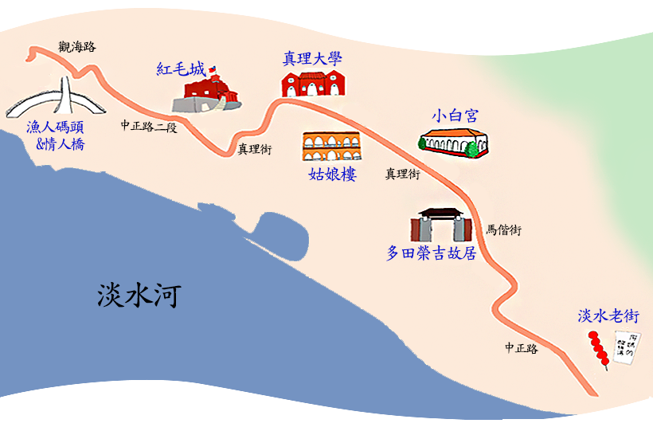

交通資訊
園區地圖

如何抵達淡水
自行開車：
- 從臺北方向沿臺2乙省道，經過士林、石牌、北投，轉至大度路，過關渡大橋後，進入淡水竹圍、紅樹林後，往淡海方向即可看到路標指示。
- 國道1號（中山高速公路）下五股交流道，往八里方向經107號縣道、103號縣道、臺15號省道過關渡大橋，進入淡水竹圍、紅樹林後，即可看到往淡海方向路標指示。
- 從基隆方向走濱海公路至淡水者，可走臺2號省道沿北海岸，經萬里、金山、石門、三芝，即可看到往紅毛城方向路標指示。
大眾運輸系統：
- 透過捷運各系統直達或轉乘至淡水站，依循指引標誌搭乘857公車或紅26公車或836遊園公車即可。
- 國光客運或基隆客運基隆-金山-淡水線，於捷運淡水站下車，依循指引標誌搭乘857公車或紅26公車或836遊園公車即可。
- 搭乘指南客運北門-淡大線、樹林-淡海線，857公車，於捷運淡水站下車，依循指引標誌搭乘紅26公車或836遊園公車。
各管區下車即停車點
多田榮吉故居
館區地址：新北市淡水區馬偕街19號
- 捷運淡水站下車轉搭857公車或紅26或836遊園公車至「小白宮站」（或「紅毛城站」），依指標前往。
- 自行開車或騎乘機車者可將車停放於：
- 小白宮對面的淡水國中收費停車場。（僅假日開放，每半小時20元。）
- 紅毛城收費停車場，再沿紅毛城前上坡步行前往，經真理大學、淡江中學、淡水國中、文化國小再轉往馬偕後可到達。
前清淡水關稅務司官邸（小白宮）
館區地址：新北市淡水區真理街15號
- 捷運淡水站下車轉搭857公車或紅26或836公車至「小白宮站」（或「紅毛城站」），依指標沿階梯上行前往。
- 自開車或騎乘機車者可將車停放於：
- 小白宮對面的淡水國中收費停車場。（僅假日開放，每半小時20元。）
- 紅毛城收費停車場，再沿紅毛城前上坡步行前往，經真理大學、淡江中學、淡水國中（正對面）後可到達。
淡水紅毛城
館區地址：新北市淡水區中正路28巷1號
- 捷運淡水站下車轉搭857公車或紅26或836公車至「紅毛城站」。
- 自行開車或騎乘機車者可將車停放於紅毛城收費停車場。
理學堂大書院(牛津學堂)
館區地址：新北市淡水區真理街32號
- 沿中山路至淡水國小(右轉)進入新生街見右方消防局(右轉)進入新民街，直行約400公尺至真理大學新民街校門。
- 沿中山路至文化路後右前方ok便利商前入口(右轉)進入新生街直行至左前方消防局前入口 (左轉)直行約400公尺至真理大學新民街校門。
馬偕古厝
館區地址：新北市淡水區真理街26號
- 前門:出捷運站後往右手邊走就會看到公車站那邊的公車網真理大學的有 紅26 、紅36、紅38坐紅26的話在[真理大學]站下車，然後順著斜坡往上走就可以到前門了。
- 後門:坐紅36的話在[真理大學淡江中學]站下車，然後往真理大學方向走。坐紅38的話在[真理大學]站下車，過馬路就是後門
姑娘樓
館區地址：新北市淡水區真理街32號
- 步行：淡水捷運站→中正路(老街)→三民街→真理街(約40分鐘)
- 開車：淡水捷運站→中山路→文化路→中正路一 段→真理街